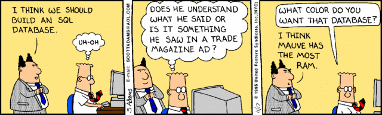

To SQL or No(t to)SQL - That Is The Question!
SQL
SQL - or Structured Query Language - was one of the first commercial languages for Edgar F. Codd's relational model (essecntially SQL was designed to express relational algebra - think Venn diagrams) that subsequently went on to become the most widely used database language. Another fine product from the good folks at IBM it was developed in the early 1970s. A significant drawback to the language is that it's not portable among systems - you have Oracle, Microsoft, MySQL and about a dozen others - which while they share much of the same syntax are unique enough to cause headaches were one to undertake a database conversion. And while I have used SQL databases (Oracle flavored) to handled large, complex data sets (millions of user records of two primary sub-categories: donors and prospects) I can attest to the fact that it was not designed with that sort of scale in mind. It is much more in keeping with a small college's alumni/alumnae data needs than a multi-national non-profit's.
Pros
- Allows for immediate insertion, deletion and retrieval of data with simple commands
- Allows users to take on administrative functions and manage the database
- It is easy to learn
- At this point it's essentially a universal language
Cons
- Lack of portability/proprietary extensions ensuring vendor lock-in.
- Interfacing is more complex than a few lines of code that NoSQL requires.
- Scalability is hindered in SQL relational models.
Types
While they are all essentially the same type there are a few "flavors" to choose from:- Oracle
- Microsoft
- MySQL
- PostgreSQL
- and ~9 others
NoSQL
NoSQL - or Not Only SQL - came to be nearly three decades after SQL's development. The evolution of NoSQL came from the sheer volume of data stored about users, objects, etc. and the frequency with which said data was accessed along with performance and processing needs. In SQL terms one could say that NoSQL has but two columns - the key and the value. And you'd select a NoSQL solution over a SQL one for the basic reason of scalability.
Pros
- Can handle large volumnes of structured, semi-structured and unstructured data
- Can handle agile sprints, quick iteration and frequent code pushes
- And is object orient programming - thus easy to use and flexible
Cons
- Data aggregation is less powerful than the SQL relational model.
- Many of the NoSQL platforms do not support transactions (unit of work performed against a database using commands of commit, rollback, savepoint and set transaction.)
- While NoSQL databases are designed to require less management it also means there's less support waiting when something does go wrong.
Types
There appears to be quite the variety of NoSQL flavors to choose from:- Document Store - pairs each key with a complex data structure known as a document. Documents can contain many different KV pairs or key array pairs or even nested documents. Used for collections, tags, non-visible meta data, directory hierarchies (e.g. MongoDB)
- Graph Databases - good for data whose relationships are best represented by a graph such as social connections, public transportation links, road maps, network topologies
- Key Value (a.k.a. Row Store) with a host of sub-types - simplest of the NoSQL types, used (e.g. Riak)
- Wide Column Store - optimized for queries over large data sets and store columns of data rather than rows (e.g. Cassandra, Hadoop)
- Object Databases - usually developed with language specific usage which limits wide adoption
- Multimodal Databases
- Grid and Cloud Database Solutions
- XML Databases
- and undoubtedly quite a few others
The Future
Having had somewhat significant exposure to (and experience with) SQL databases I'm looking forward to better understanding the world of NoSQL ones. I have a fondness for relational databases but can see the value of and need for something more scalable and nimble. I think I'll build mine in periwinkle...